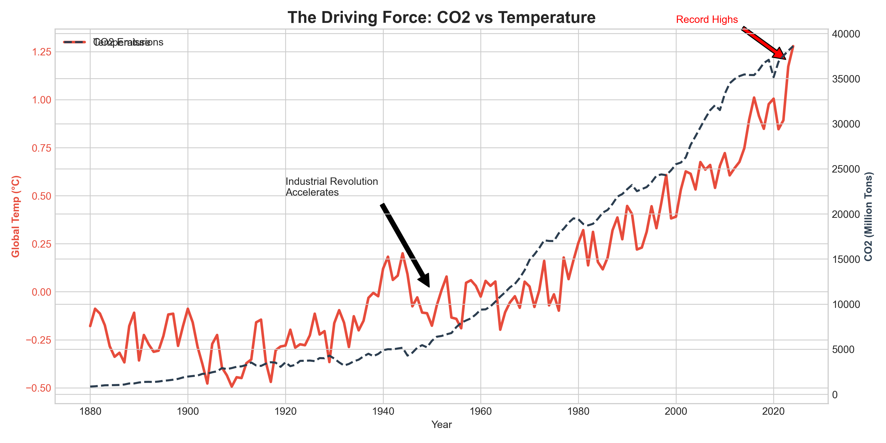
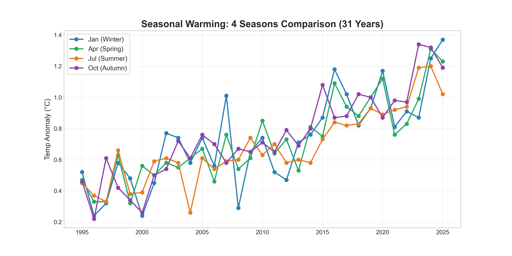
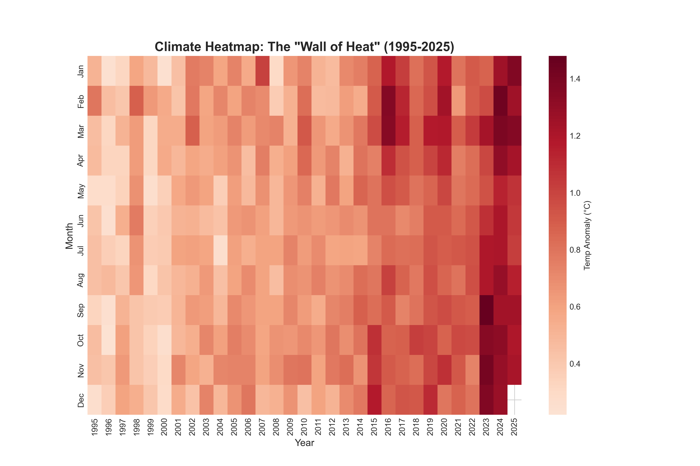

Focus Period: 1995 - 2025 (Last 30 Years)
This chart explains the correlation. The Red Line is the temperature, and the Dashed Line is CO2 emissions.

Instead of just Winter/Summer, we now track:
This shows that warming isn't just happening in the summer heatwaves, but year-round.

We removed the numbers to make the pattern clearer. Each column is a year, each row is a month.
Look at the right side of the chart (recent years) - it is almost entirely dark red, regardless of the month.

Generated by EcoPulse Advanced Engine